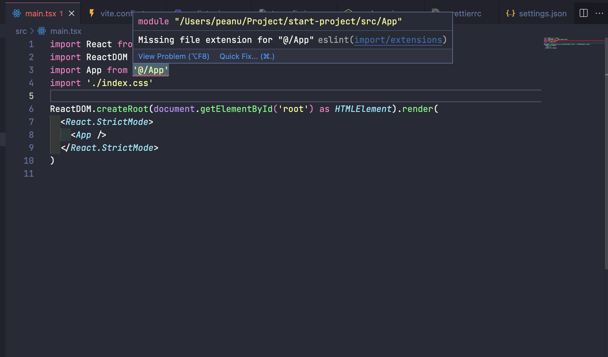

也許該更早開始用這東西。
簡述
在實際接手過幾項專案以後，我常常會看到一些程式碼風格與程式碼品質的問題，例如說：
- 到底該用單引號還是雙引號？
- 到底縮排要空 2 格還是 4 格？要用 Tab 還是空格？
- 該用箭頭函式還是普通函式？
- 不會被改變的變數是不是該一律用
const來宣告？ - 沒用到的變數，或者是非必要的 console 是不是不該出現？
- etc…
雖然這幾個問題可以說是跟個人喜好有關，但我覺得在團隊合作上應該還是要有一個明確的規範比較好，一來是讓整個專案有一致性，二來是能讓下一個接手的人可以有更好的開發體驗（？？？
總之呢，這篇想要從頭開始用 Vite 來建立一個 Start Project，要整合的項目有：
- React
- TypeScript
- ESlint（airbnb）
- Prettier
- Enviroment Variable
步驟
1. 建立 vite 專案（React + TypeScript）
1 | npm create vite@latset |
2. 初始化 ESLint
這邊會透過 global eslint 的指令來初始化，如果你沒有的話記得先 npm install -g eslint：
1 | eslint --init |
接下來依序選擇：
- To check syntax and find problems
- JavaScript modules (import/export)
- React (framework)
- Yes (TypeScript)
- Browser
- JSON
- Yes (install all needed dependencies)
- npm
根據剛剛的選擇，接下來應該會幫你安裝底下這幾個套件：
- eslint-plugin-react
- @typescript-eslint/eslint-plugin
- @typescript-eslint/parser
- eslint
可以到 package.json 中確認：
1 | "devDependencies": { |
到目前為止，打開 .eslintrc.json 的內容應該會是大概像這樣子：
1 | { |
如果你不知道這邊的內容是在設定什麼的話？可以到 ESlint - 配置一個 Airbnb 環境 參考，接下來我們要添加 airbnb 的 config。
3. 添加 airbnb 的規則
首先要安裝 eslint-config-airbnb，我都把它稱為 airbnb 組合包，內容物包含多個 plugin 和一個 config：
- eslint-config-airbnb：根據底下的 plugin 來撰寫的 rules
- eslint-plugin-import：添加 import 相關的規則
- eslint-plugin-jsx-a11y：添加 a11y 相關的規則
- eslint-plugin-react：添加 react 相關的規則
- eslint-plugin-react-hooks：添加 react hook 相關的規則
附註：再提醒一次，如果你不知道 config 跟 plugin 的差別，請參考 ESlint - 配置一個 Airbnb 環境
裝好後把 .eslintrc.json 的內容修改成以下：
1 | { |
做到這邊後，你可以打開 App.tsx，然後加上 useEffect 來確認是否有讀取到對應的規則：
到目前為止，airbnb 的基本配置已經設定好了，接下來會先修復幾個你可能會碰到的問題。
4. 修復 import 的錯誤
打開 main.tsx 後會看到有一個錯誤是不正確的，像這個：
照理說我們這樣的引入方式應該是沒有錯的，但是卻會顯示副檔名和找不到模組的錯誤訊息。原因的話我猜是因為這裡用的是 TypeScript，所以在解析 .tsx 檔案時會有一些相容性的問題。
解法方法是安裝 eslint-config-airbnb-typescript 並把 .eslintrc.json 的內容修改為底下這樣：
1 | { |
簡單來說這邊做的事情是讓 ESLint 去透過 tsconfig.json 來解析 .tsx 相關的檔案，所以設定好後應該就能看到問題解決了：
附註：沒有剛剛的 import 問題了
5. 修復 vite.config.ts 的錯誤
修正完剛剛的錯誤後打開 vite.config.ts 會發現另外一項錯誤：
簡單來說，這邊的意思是我們剛剛透過 parserOptions 讓 ESLint 用 tsconfig.json 來解析檔案，但 ESlint 發現 vite.config.ts 並沒有被包含在其中：
1 | // tsconfig.json |
解決的方式就是把 vite.config.ts 填進去就可以了：
1 | { |
雖然變成了另一項錯誤（iport/no-extraneous-dependencies），但可以看到剛剛的錯誤確實消失了，
至於這個新的問題是在提醒我們是不是裝了沒用的 dependencies，不過以目前的 case 來說其實是有用的，建議到 .eslintrc.json 對這項 rules 調整一下就好：
1 | { |
6. 加入 prettier
需要安裝的套件：
- prettier：core package
- eslint-plugin-prettier：添加 prettier 相關的規則
- eslint-config-prettier：設定 prettier plugin 的 config
接下來要處理 prettier 和 ESLint 相衝的問題，所以一樣把 .eslintrc.json 修改成底下：
1 | { |
附註：這邊的寫法是官方推薦的簡化寫法，其實原本的寫法是這樣。
再強調一次一定要把 prettier 放在最後面，這樣子 ESLint 才會優先用 prettier 的規則來覆寫掉其他前面的規則，所以你應該會看到這樣的錯誤訊息：
注意現在這些規則都是來自 prettier，而不是前面的規則。意思是指 prettier 擁有最大的優先權，所以不管前面的規則如何最後都得聽 prettier 的，這樣子等一下在格式化的時候就不會出現衝突的問題。
到目前為止已經完成 prettier 和 ESLint 的配置，接下來要添加 prettier config 檔案。
7. 設定 prettier config
接下來這邊就是團隊討論的時間了，這邊會透過 .prettierrc 來強制讓所有人的 prettier 用相同的條件去做格式化，這邊附上我個人比較偏好的設定：
1 | { |
附註：這些規則等同於 ESLint 上的規則，所以沒有遵循的話也會出現提示訊息。
完成後執行 formatOnSave（VS-Code 的設定）以後就會看到所有 prettier 相關的訊息都消失囉：

8. 調整部分 rules
設定完 prettier 以後，確實解決了和 ESLint 相衝的問題，不過還是會看到一些其他的錯誤訊息：
這邊的錯誤有三個：
- react/react-in-jsx-scope：沒有宣告 React（舊版的 React 需要）
- react/jsx-no-target-blank：當
target='_blank'時需加上rel="noreferrer"來避免安全性問題 - @typescript-eslint/no-shadow：出現同名稱的變數（雖然不同 scope 之間互不影響，但會影響到可讀性）
以這三個問題來說，我自己認為第一、三項是非必要的規則，所以可以到 .eslintrc.json 把 rules 的部分修改成底下：
1 | { |
附註：可以調整的參數有 off、warn、error。
修改完後就會看到只留下其他沒有被 off 的訊息：
特別寫這段只是想讓你知道其實你可以自己去決定 rules，ESLint 並沒有一定要依照某個 config 的規則，畢竟有些規則可能不適用於目前的專案（例如沒有宣告 React 的例子）。
到目前為止，已經處理好 ESLint 和 prettier 相關的設定。接下來會是一些和 vite 相關的額外需求，如果你對這些沒有興趣的話到這邊就可以結束了。
9. 讓 vite 結合 ESLint 功能
如果你以前是用 CRA（Create React App） 來建立專案的話，應該會對這個討人厭的畫面很熟悉：
這邊想做的事情是讓 vite 可以結合 ESLint 的錯誤提示，讓 ESLint 一旦出現 Error 時就停止編譯，並產生跟 CRA 一樣的全屏警示：
附註：一種不照規則來就讓你沒辦法開發的概念 XD
實現的方式很簡單，首先安裝 vite-plugin-eslint，接著到 vite.config.ts 加入底下內容：
1 | import { defineConfig } from 'vite' |
設定完以後可以自己試著弄出一個 Error 看看，應該就會出現同樣的警示訊息了。
10. 設置 vite 在 import 時的 alias
在開始之前先解釋一個重要觀念：
- VS-Code 是依據
tsconfig.json的設定來顯示 import 路徑 - Vite 是依據
vite.config.ts的設定來編譯 import 路徑
也就是說，假設你現在把 tsconfig.json 的 baseUrl 設為 ./src，那 VS-Code 就會根據這項設定來顯示對應的路徑，這是正常的行為沒錯。
但接著重點來了，雖然在 VS-Code 上看似一切很完美，但 vite 可就不是這樣了，因為 vite 並不會根據 tsconfig.json 的設定下去編譯，所以你最後跑出來的結果會是有問題的：
附註：注意 VS-Code 確實有依照 tsconfig.json 的設定，所以在輸入 'App' 的時候才會出現對應的自動補齊。
所以這邊要處理的問題就是「確保兩邊的設定是同步的」。如果 tsconfig.json 說 baseUrl: './src'，那 vite.config.ts 就也要有相對應的設定來處理編譯時的路徑問題。
這邊你可以用官方提供的 alias 方式去處理，例如：
1 | import * as path from 'path' |
這樣子 vite 在編譯時看到 @ 的時候就會自動當成是 src。
但我自己更推薦用 vite-tsconfig-paths 來處理。它是 vite 的一個 plugin，能夠讓 vite 自動根據 tsconfig.json 的設定下去做編譯，就不用自己處理同步的問題了。
安裝好後依照文件裡的說明把 vite-config-ts 修改成底下：
1 | import { defineConfig } from 'vite' |
這樣子 vite 的路徑就會直接參照 tsconfig.json 的 config 下去做編譯囉。
還沒完，還有另外一個問題
如果你有用到 alias 的功能的話，會發現這時候換 ESLint 出來哀嚎了：
1 | { |

當時寫到這裡時腦海中突然想起 卡米狗 曾經說過的經典語錄：
工程師的日常就是除了一個錯之後看到的不是正常，而是看到下一個錯誤訊息。
…
要有耐心。
總而言之，這邊要做的事情跟剛剛差不多。剛剛是叫 vite 去讀 tsconfig.json 來做編譯，現在變成是叫 ESLint 去讀 tsconfig.json 來做 linting（因為 ESLint 不會自動去讀 tsconfig.json），所以要安裝另一個套件是：eslint-import-resolver-typescript
安裝好後把 .eslintrc.json 修改成底下：
1 | { |
調整完後應該就能看到錯誤消失囉：
11. 加上環境變數
最後這一步是我自己工作上的需求，但我想說不定有人也有相同的需求所以就順便寫下來吧。
這邊對於環境變數的建立不會解釋太多，想知道細節的話可以參考 Vite Enviroment Variable 或 官方文件。
首先，這邊想切割的環境分別為：
- dev
- demo
- production
所以會建立 .env.dev、.env.demo、.env.production 這三個檔案。
接著我希望當我執行不同的 build 指令時能去讀取對應的環境變數檔案，所以 package.json 會修改成這樣：
1 | "scripts": { |
此外，我也希望最後 build 出來的檔案可以放在不同的資料夾中，所以會把 vite-config.ts 修改成這樣：
1 | import { defineConfig } from 'vite' |
這邊如果在 build 的時候出錯通常是跟 typescript 編譯時的型別錯誤有關，可以看一下錯誤訊息並且修正即可。
如果你已經跟著每一步做到這邊，恭喜你！整個 start project 就已經建立完囉。
結語
整個 ESLint 設定的流程說複雜不複雜，說容易也不容易，畢竟走下來會發現常常碰到裝了 A 以後 B 就出問題，又或者是因為 TypeScript 的關係要處理的相容問題變的麻煩許多，所以我其實也花了大概一天的時間才把整個前後關係給釐清。
會寫這篇的契機主要還是因為網路上的資源比較零散，也許是因為大家都是從網路上互相參考的關係，總覺得比較熱門的內容都長得有點類似，連沒講清楚的地方也剛好很巧的沒有人提到，所以只好自己試著把這些零散的內容給組再一起，試著讓它完整更清楚一些。
我覺得學一樣東西最重要的還是理解那樣的東西的核心部分，像我寫完這篇以後就對 ESLint 的整個概念就清楚了許多，在走每一步的時候也很清楚自己在做什麼事情。如果上面的地方有哪邊覺得不太懂的話，我想可能就是你對 ESlint 的部分沒有很熟所以才會有這些疑問，建議可以參考最下面附的資源，我覺得這些對我當初在建構的時候帶來了不少幫助。
最後，如果你真的很懶的自己走這每一步的話，以上的完成品我有放在 GitHub 上，可以參考底下連結：